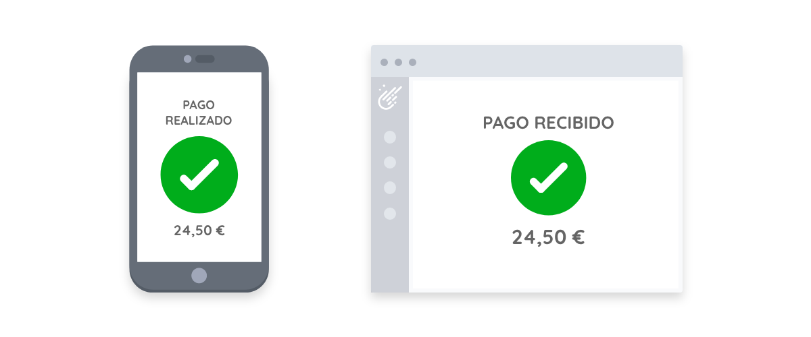
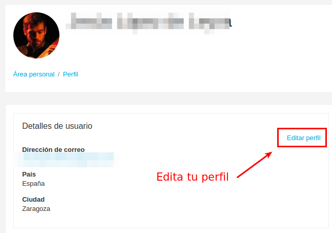
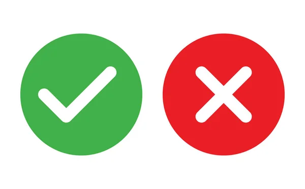
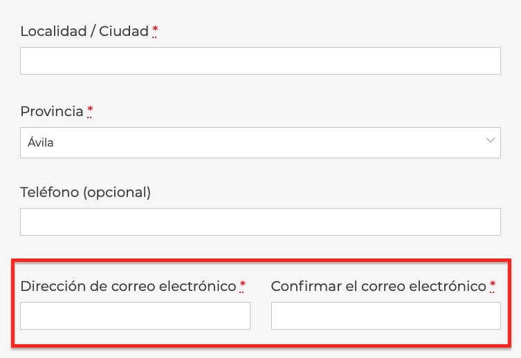
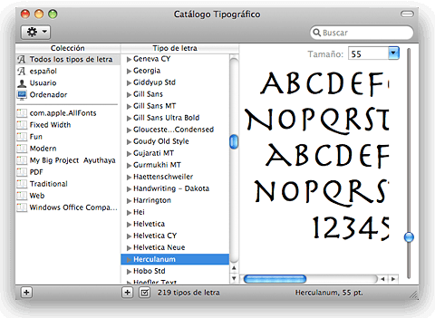
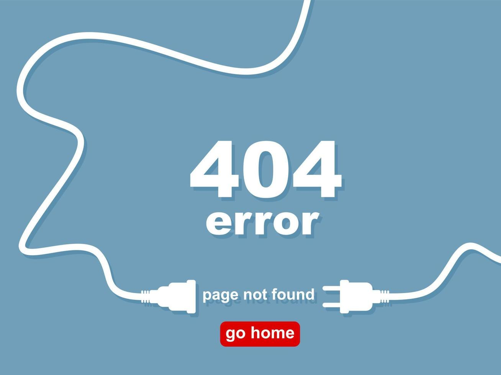

Principios de la Usabilidad Web
1.Visibilidad del sistema:
Se debe siempre de informar al usuario de las acciones que ha realizado, para que comprenda el
progreso que lleva.
Ejemplo:
En una tienda en línea, cuando el usuario desea completar el pago, debe ingresar
sus datos y confirmar la compra. Por lo tanto, es crucial que, una vez realizada esta acción, se
despliegue un mensaje de confirmación del pago que incluya detalles de la compra. Esta
información asegura que el usuario esté al tanto del éxito de su transacción.

2. Relación entre el sistema y el mundo real:
Es importante asegurar que los procesos del sistema sean comprensibles para el usuario. Esto se
puede lograr utilizando un vocabulario y diversos recursos (imágenes, íconos) claros y fáciles
de interpretar.
Ejemplo:
El uso de una imágen de papelera, la cuál es interpretada como la acción de borrar.
3. Control y libertad del usuario:
Es esencial brindar al usuario la capacidad de corregir cualquier error que pueda surgir durante
su interacción con el sistema, esto fomenta una sensación de control y confianza, lo cuál
provoca satisfacción en el usuario.
Ejemplo:
El permitir al usuario editar la información de su perfil en el sitio web. Esta funcionalidad le
permite corregir errores, actualizar detalles personales y ajustar preferencias de privacidad
según sea necesario.

4. Consistencia y estándares:
Se debe procurar seguir los estándares y lenguajes que a lo largo del tiempo se han ido
estableciendo, debido a que si estos no se aplican correctamente el usuario puede llegar a no
comprender la funcionalidad de un elemento, porque no está familiarizado con este.
Ejemplo:
Ciertos colores se asocian con acciones específicas lo que permite crear interfaces intuitivas y
fáciles de usar, minimizando las confusiones y errores por parte de los usuarios. Por ejemplo,
la elección de colores en un botón como verde para 'aceptar' y rojo para 'cancelar'.

5. Prevención de errores:
Es fundamental tomar medidas para evitar que los usuarios cometan errores. Si llega a cometer
algún error debe de tener a disposición todas las opciones posibles para poder corregirlo.
Ejemplo:
Solicitar una confirmación adicional del correo electrónico en un formulario de contacto puede
ayudar a prevenir la recepción de correos electrónicos mal escritos.

6. Reconocimiento antes que recuerdo:
Resulta más práctico para los usuarios reconocer que memorizar acciones u objetos para cumplir un
objetivo. Por ello, es importante facilitar al usuario el proceso, asegurando que la interfaz
sea intuitiva y que las opciones sean fácilmente identificables.
Ejemplo:
Al usar un editor de textos, resulta más sencillo ver una previsualización de cada fuente, ya
que esto permite hacerse una idea de su apariencia sin necesidad de recordar el nombre y el
estilo de cada una.

7. Flexibilidad y eficiencia de uso:
Es importante tener en cuenta que los sistemas sean accesibles para usuarios con diferentes
niveles de habilidad, permitiendo a todos realizar tareas con un grado mínimo de efectividad.
Ejemplo:
El buscador de Google permite una flexibilidad y eficacia de uso, debido a que si el usuario es
novato, solo con escribir lo que desea buscar obtendrá resultados. Sin embargo, si es un
usuario que cuenta con más experiencia y desea realizar búsquedas más específicas, puede
utilizar operadores en el buscador.
8. Diseño estético y minimalista:
Los sitios web deben ser fáciles de leer y con elementos que sean fácilmente
identificables a simple vista. Se debe priorizar la experiencia del usuario sobre la pura
apariencia visual.
Ejemplo:
El sitio web de Apple tiene un diseño limpio y sencillo que evita la sobrecarga de información y
permite que los usuarios se concentren en los productos. Al eliminar elementos innecesarios se
mantiene un enfoque en la claridad y la funcionalidad.

9. Ayudar a los usuarios a reconocer, diagnosticar y corregir los errores:
En caso de que se produzca un error, es crucial proporcionar información clara y en un lenguaje
entendible para que el usuario comprenda qué salió mal.
Ejemplo:
Al ocurrir un error porque no se encontró una página, no es adecuado mostrar 'error 404',
debido a que esto no puede ser interpretado por todos los usuarios, por tanto, se sugiere
mostrar un mensaje más amigable como: 'Lo siento, página no encontrada', y se le puede
proporcionar una posible solución añadiendo enlaces a páginas relacionadas.

10. Ayuda y documentación:
Brindar al usuario toda la información necesaria para que se familiarice con el funcionamiento de
una
herramienta, sitio web o aplicación, de esta forma no requiere de documentos externos al sitio
web para comprender a navegar dentro de este.
Ejemplo:
Agregar FAQs, o 'Preguntas Frecuentes', como una sección dentro del sitio web, ya que esta
permite
responder de manera clara y rápida las dudas más comunes de los usuarios, debido a que está
diseñada para ofrecer información útil.

Fuente: Semrush